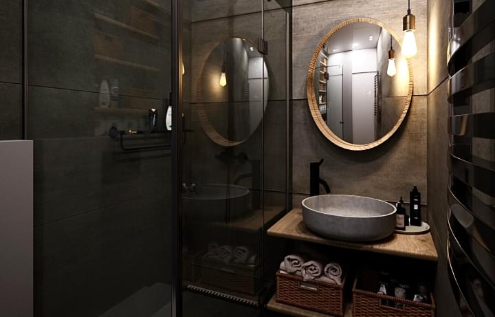
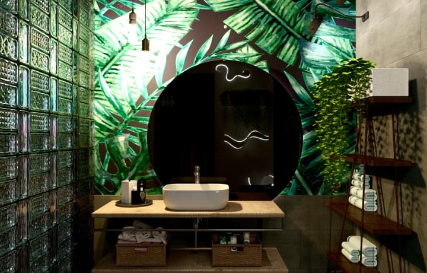
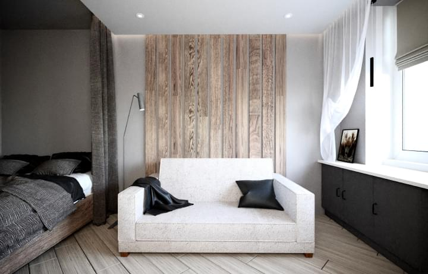
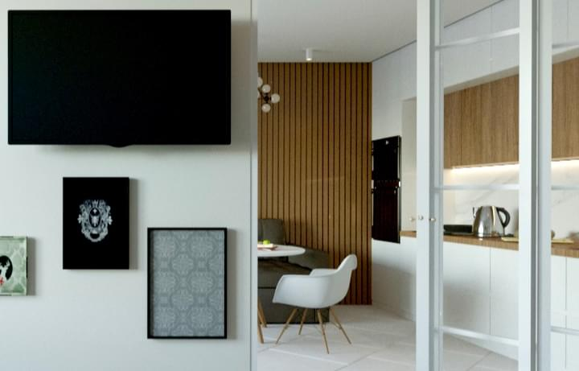

Рада приветствовать Вас на моей страничке! Я художественный визуализатор, дизайнер. Начала свой дизайнерский путь еще в юности, помогая строить дом отцу. Все начиналось закладкой фундамента, а закончилось покраской стен. Закончила Киевский Политехнический институт по специальности "Электроэнергетика, электротехника и электромеханика " с красным дипломом. Еще студенткой начала делать планы расстановки электрических приборов в AutoCAD. Окончила международную школу дизайна и графики Art Design. Сейчас являюсь преподавателем блока "Программы " на курсе «Дизайн интерьера».
Интерьерная Визуализация
Предметная Визуализация

Моделирование интерьера в стиле лофт для мужчины. Естественная цветовая гамма, удобная планировка и зонирование

Моделирование изящного и изысканного интерьера для молодой семейной пары, увлекающейся искусством и современным дизайном.

В оформлении пространства использован прием контрастности фактуры, а также грамотного сочетания классических материалов и инновационных технологий

Яркий и вместе с тем минималистичный интерьер выдержан в монохромной цветовой гамме, сдержанность и графичность которой разбавлена необычными деталями
В оформлении пространства использован прием контрастности фактуры, а также грамотного сочетания классических материалов и инновационных технологий
Яркий и вместе с тем минималистичный интерьер выдержан в монохромной цветовой гамме, сдержанность и графичность которой разбавлена необычными деталями